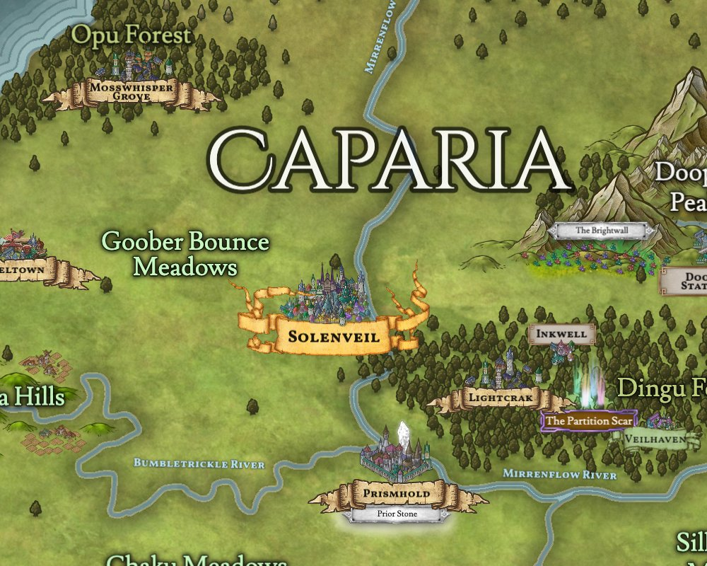
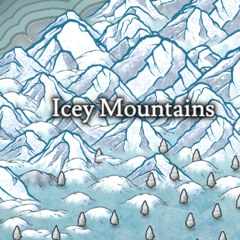
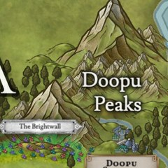
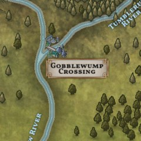

The Anavale Calendar
Years, months and weeks across Caparia, Nombi, Sohot and Jugabi, and what the weather is doing while you count them.
The Year
Ask anyone in Anavale what year it is and they will say three-twelve. Three hundred and twelve years ago, six quarrelling nations sat down at one painted table in Solenveil and agreed to stop quarrelling, more or less. Everyone has been counting from that day since, even the people who would rather not.
The Signing at Solenveil

On Maybloom 20, after a generation of border squabbles, the six nations of Caparia met in Solenveil and signed the agreements of the Pogglewog Confederation. They promised four things: no member makes war on another, trade roads belong to everyone, festivals are shared, and every quarrel goes to the Confederation Council.
The Solenmere wrote their own new government, the Caldenric Accord, into the same document, and its council sat for the first time that very evening. That day became 1 AA.
"We did not agree on much that day. We agreed to keep talking. It turned out that was enough."
The first Chancellor of the Caldenric Accord, at the Signing
How to Say It
Why Everyone Uses It
A Caparian date ended up on the whole continent because of the Formery. In 9 AA it put the Accord count on the date line of every form it issues, after the Confederation Council filed the request correctly on its eleventh attempt. The Formery issues forms everywhere, so every permit, receipt and travel paper in Anavale has carried an AA date ever since.
IN DUE
COURSE
Not Everyone Is Happy About It
The Accord is Caparian, and the rest of Pogglewog has never let Caparia forget it.
"Our empire was counting its years before Caparia had a word for counting."
A Memory Keeper of the Auvari Remnance
A Timeline of Anavale



The Months
Twelve months, the same lengths as the ones you know. Each one sounds like its twin and starts with the same letter.
The Week
Seven days, starting with Shineday. Yes, Friday is Frogday. Nobody in Caparia thinks this is funny.